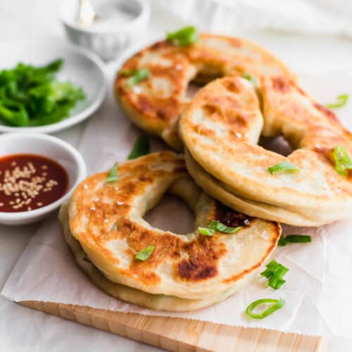

Green Onion Cake
Home

Green onion cake is a savory Chinese flatbread made from dough layered with finely chopped green onions (scallions), oil, and salt, then pan-fried until golden and crispy on the outside while remaining chewy and tender inside. It's a popular street food in many parts of Asia and has become a beloved snack or appetizer in places like Edmonton, where it's often served with soy sauce or chili dipping sauce.
Ingredients
-
3 Cups All-purpose flour
-
Salt to taste
-
Baking Powder
-
1 1/2 Cups Hot Water
-
2 tablespoons Sesame Oil
-
1 Bunch Chopped green onions
Steps
-
Use a fork to mix flour and boiling water in a large bowl. Knead dough into a ball. Cover bowl with plastic wrap; let dough rest for 30 to 60 minutes.
-
Evenly divide dough into 16 pieces. Roll each piece into a 1/4 inch thick circle. Brush each circle with oil, season with salt and pepper, and sprinkle with about 1 teaspoon of green onions. Roll up, cigar style; coil each pancake and pinch open ends together to form a disc. Roll each circle flat to about 1/4 inch thickness.
-
Heat 2 teaspoons oil in a large skillet. Fry cakes until golden brown, about 2 minutes on each side. Add more oil between batches, if necessary.